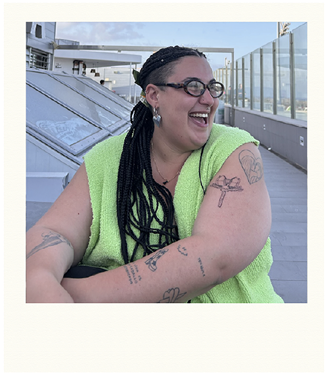
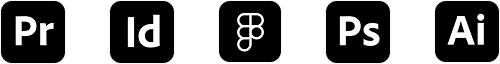

ABOUT

Behind Toxa Studio is me,Antía: a designer who sees design as a tool to build identity and create visual impact. I work driven by curiosity, attention to detail, and a constant search for a distinctive visual language.

BACKGROUND
SELECTED PROJECTS
I am a graphic designer in constant exploration, always searching for ways in which images can tell stories beyond the obvious. I usually begin my projects through research and sketching, although in personal work I allow space for play and experimentation. I am drawn to conceptual projects that push me beyond my comfort zone and allow me to explore identity, memory, and human connections with care and attention to detail. Rather than pursuing a fixed style, my work aims to raise questions, create impact, and offer a space where the viewer can either recognize themselves or challenge what they see.
INTERESTS
I am inspired by small and curious things: reading, photography, cinema, illustration, and those subtle details that often go unnoticed. My projects revolve around identity and memory, blending research with graphic play to tell stories with care and attention to detail. I am particularly interested in how visual language can capture quiet emotions and overlooked narratives, transforming them into thoughtful compositions that invite reflection and connection.
EDUCATION
2013/2015 . BACHILLERATO
ies numero 1 (santa eugenia de ribeira)
2024/2025 . PROGRAMA BÁSICO EN INTELIGENCIA ARTIFICIAL
UDIT - UNIVERSIDAD DE DISEÑO, TECNOLOGÍA E INNOVACIÓN
2024/ACTUALIDAD . DISEÑO MULTIMEDIA Y GRÁFICO
UDIT - UNIVERSIDAD DE DISEÑO, TECNOLOGÍA E INNOVACIÓN
SKILLS


OBSERVATORY
-

-

-

-

-
A collection of moments, details, and visuals that catch my eye. I capture what inspires me, creating a personal archive of textures, colors, and scenes that shape my creative vision.
-

-

-

-

"To look is to choose"
AMÉLIE NOTHOMB